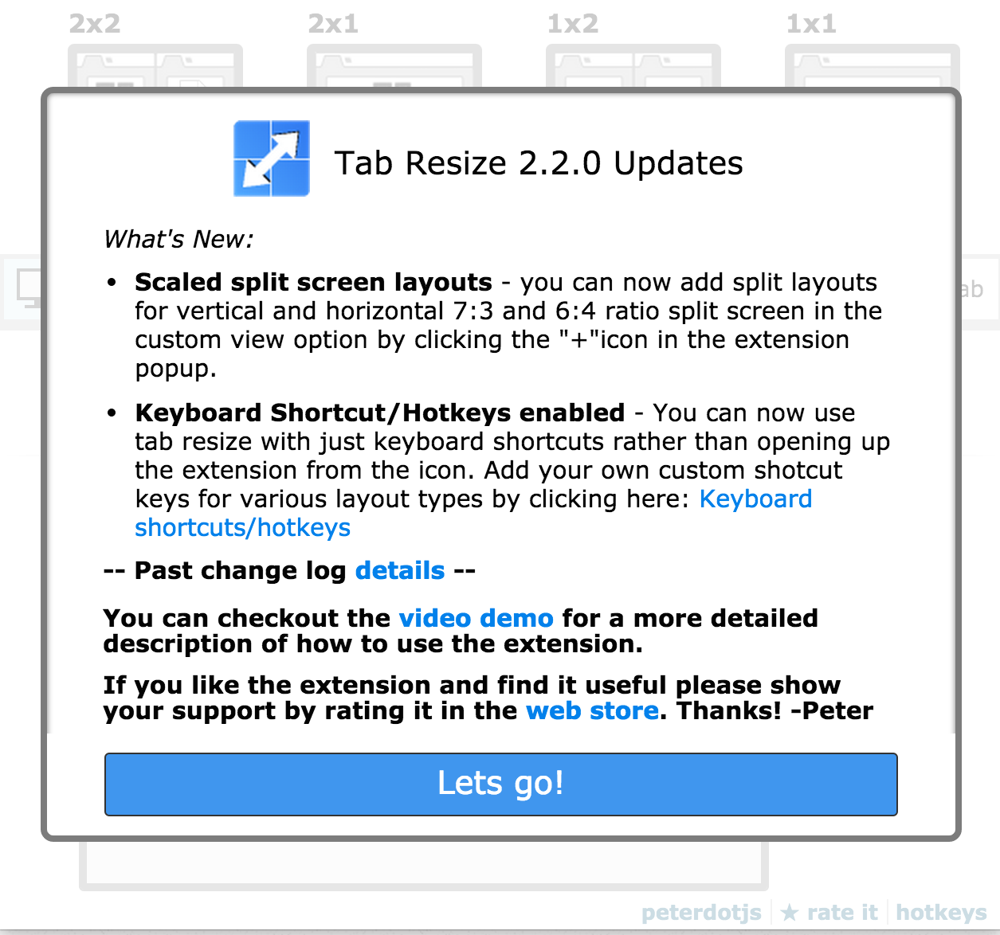

Updates

Whether it be bug fixes or enhancements you’ll likely need to update your extension after the initial release. The deployment process itself is exactly the same. As stated before you’ll just need to update the version property in the manifest to a newer one. If you’re using source control make sure to tag your releases so if anything goes wrong with an update you can quickly revert back to a previous version. There will be plenty of enhancement requests that come your way once your user base grows but take all feedback with a grain of salt. If the feature enhancement doesn’t make sense for your product - don’t consider it. Users will ask for anything and everything but you’ll have the end decision on whether to push it or not. Tab Resize has had many many feature requests - some that made sense and some that didn’t The requests that did make sense have greatly improved it overall, which wouldn’t have been possible if not for users reaching out. When used correctly user feedback can take your app to the next level.
Be sure to inform users of any updates or bug fixes that you deploy. An awesome new feature that isn’t discoverable is completely useless. I’d suggest adding a popup after the user opens up the updated extension so they’ll know exactly what has changed. You can use localstorage to store the current version decide accordingly what to do. Through the Chrome API you can also listen to install or update event and execute callbacks as required.
Monetization
After your user base grows you’ll probably be contacted by several monetization firms asking if you would like to partner with them. It’ll involve adding a snippet of JavaScript to your extension, where you’ll get a certain amount of money based on the number of active users per time period. I’m not against monetization but personally I found it a risk that I didn’t want to take. The monetization will sound very tempting but I didn’t want to take the chance of it affecting the user experience or Google’s terms and conditions. Google has strict policies on the way ads are injected so you’ll want to be careful. The firms that had reached out in the past has promised that the user experience wouldn’t be affected but I didn’t think it was worth the risk. You can also try adding a donate or buy me a coffee button but from what I’ve read those aren’t very successfull. Personally, I didn’t want to build something that was “free” with strings attached. Unless you are trying to offset server or api costs, just think of it as paying it forward with your code.